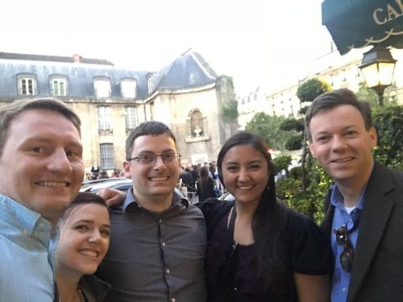
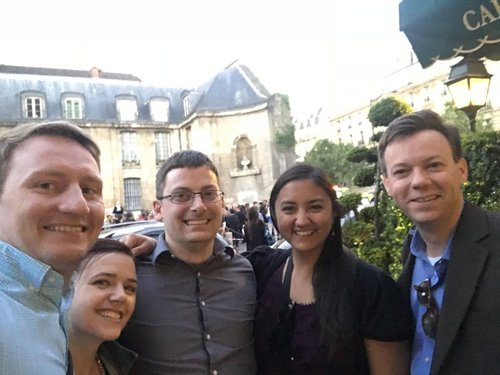
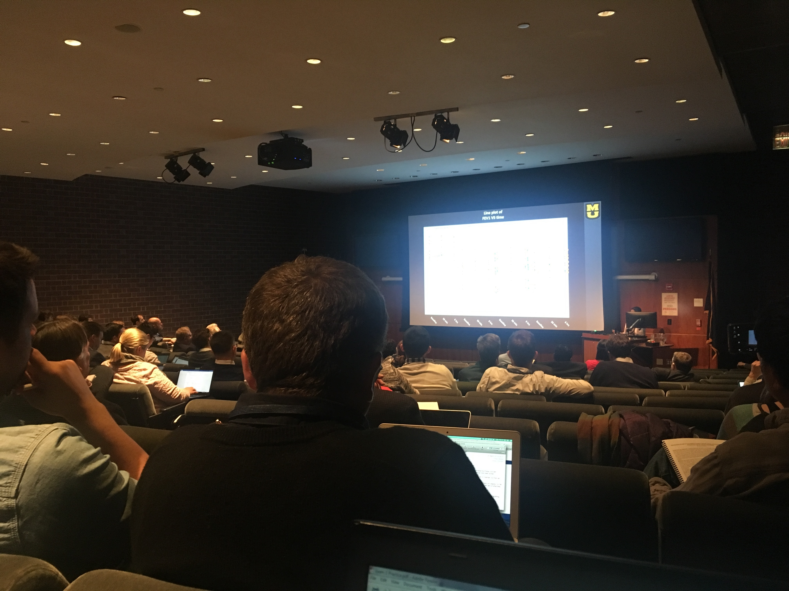
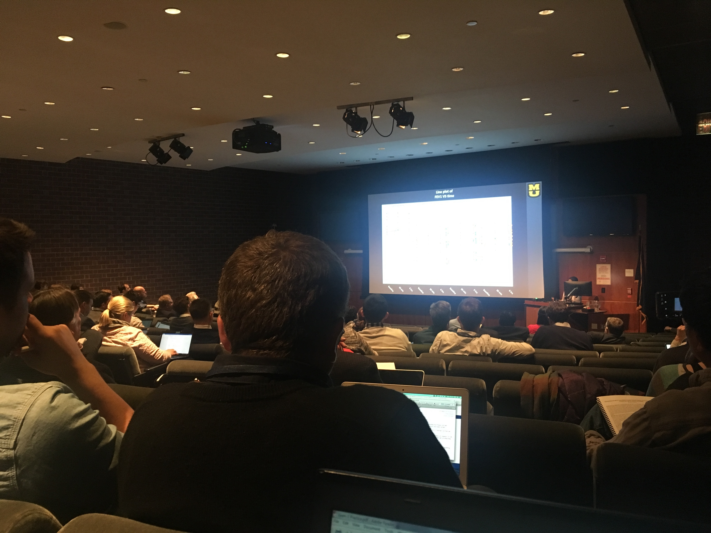

Other Science Stuff
This majority of this webpage is focused on the particular research interests of pulmonary imaging. This page contains resources which relate to the broader topics of the philosophy of science and clinical research in general. Not all scientists need to know how gases are hyperpolarized they should know how to form a testable hypothesis. Not all scientists need to know what to look for in a brain MRI, but all should know what p<0.05 means (and no, it does not mean that the hypothesis is confirmed). Scientists need not agree or accept arguments which are unscientific, but they must be prepared to discuss and present scientific evidence with gentleness and respect (many scientists are still learning this). Here are some such resources for the interested budding scientist.
MRI Resources
MRIQuestions.com - An excellent website describing nearly every facet of NMR and MRI in easy-to-understand prose. An undergraduate course in MRI could probably be taught using only this website as a resource (though its articles are a bit too cursory for graduate-level work). If you need a overview of any sub-field of MRI this is a good first place to start.
Coding Resources
R Cheat Sheet - PDF printout of useful operations in R.
CoderByte - The best way to learn how to code is simply to do it. CoderByte is a website which contains coding challenges to help improve your skills.
Science Philosophy and Scientific Method Resources
ASA Statment on p-Values - P-values are ubiquitous in scientific literature because it expresses the probability that a NULL hypothesis is true. While many students are taught that it is important to calculate and include p-values as a definitive statistical test, few seem to know what exactly it tells the audience. P-value can even be calculated incorrectly to indicate significance in insigificant results - so-called p-hacking. Part of being a good scientists is to recognize proper and improper use of analysis methods, and the ASA's statement is helpful in this regard.
JAMA Statement on Medical Overuse - This JAMA article is a systematic review of the 10 most overused diagnostic tests in medicine. We do research in medical imaging, therefore we see medical imaging as a great tool to address medical maladies. But it is always the best (and cheapest) option? This question is always important to keep in mind when designing your research (your grant study section will be there to remind you lest you forget).
Hidden Traps in HealthCare Decision Making - This pamphlet, though focused on geriatric medicine in particular, is an excellent overview of common biases which healthcare providers are exposed to and how to avoid them in clinical practice.
Why most published research studies are false - An insightful article dealing with common problems in peer-reviewed science including inherent researcher bias, poor hypotheses, underpowered studies, incorrect analysis, etc.
How Many Scientists Fabricate and Falsify Research? - Any action which compromises the integrity of scientific research is considered scientific misconduct. It can generally be boiled down to three mortal sins: fabrication (making up data), falsification (unfairly manipulating data), and plagarism (appropriating someone else's ideas or data). How often does this actually happen? This article attempts to answer this question through a meta-analysis of survey data.
Valve New Employee Handbook - Are you a valuable worker? How do you know? Valve is one of the most successful video game companies, and this is their operation model in a nutshell. Though not strictly scientific, it provides a very useful model of what makes an employee valuable to an employer. This is divided into 4 metrics: skill level (how difficult of a problem can you solve?), productivity (how much content do you create?), group contribution (how much do you contribute to the team as a whole?), and product contribution (what do you contribute to the broader scope of the brand).
Science Websites, Blogs, and Podcasts
NeuroLogica Blog - Dr Steven Novella is a premier advocate of critical thinking, scientific skepticism, and science-based medicine. His blog contains excellent commentaries on new scientific discoveries and public knowledge on scientific topics.
YouTube Channels and Videos
3 Blue 1 Brown - One of the best math channels on Youtube, 3 Blue 1 Brown videos attempt to make complicated math topics intuative using clever, visually-impressive, animations. In particular, his series on Linear Algebra is excellent.
Crash Course - This channel covers myriad topics in science and medicine, but also in literature, philosophy, and many others. Their videos are easy to understand and provide an excellent overview of complex disciplines. I recommend the Anatomy and Physiology series - in particular the individual lessons on lungs and gas exchange.
Minute Physics - Minute Physics, as its name implies, is a channel of approximately 1 minute videos about physics topics. They are very well scripted and succinct and are generally very light on math and heavy on concept. In particular, I recommend the video on sources of magnetism which is one of the best explanations of a very complicated phenomenon.


 



 
